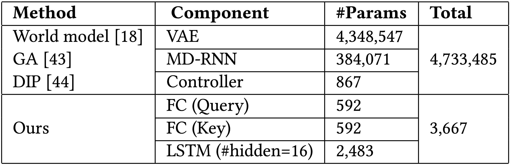
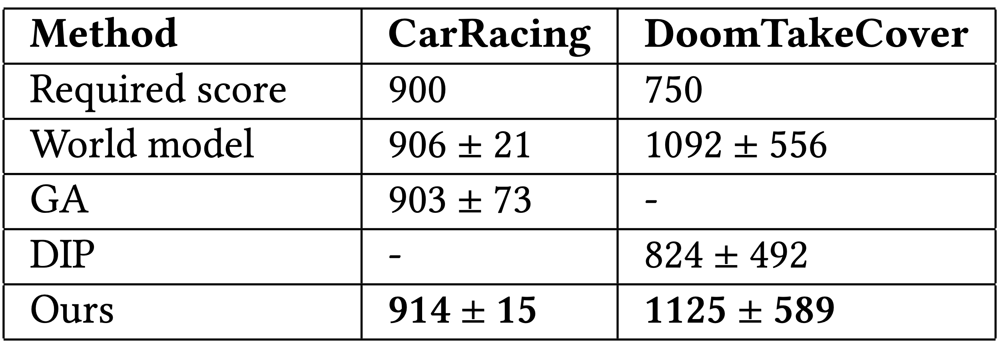
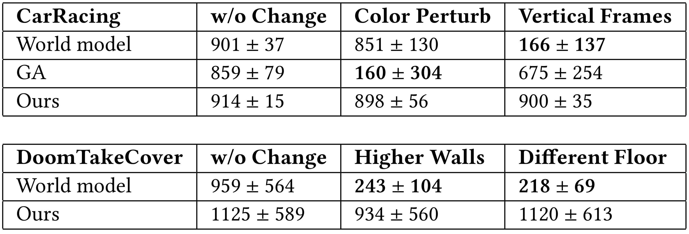

While reinforcement learning methods in existing literature can solve many vision based tasks, it is often difficult to understand an agent’s policy without using dedicated tools for interpretability. In this paper, we investigate the use of self-attention to create agents that observe its environment similarly to how humans see the world. By constraining agents to access only a small fraction of its visual input, we show that their policies are directly interpretable in pixel space. We demonstrate that neuroevolution is ideal for training self-attention architectures for RL tasks, because we can remove unnecessary complexity needed for gradient-based methods, resulting in a much simpler architecture, and also allowing us to incorporate modules that can include discrete, non-differentiable operations that are useful for our agent. We argue that self-attention has similar properties as indirect encoding methods, in the sense that large implicit weight matrices are generated from a small number of key-query parameters, thus enabling our agent to solve challenging vision based tasks with at least 1000x less parameters than existing methods. Since our agent learns to attend to only task critical visual hints, they are able to generalize to environments where task irrelevant elements are modified while conventional methods fail.
This article contains supplementary videos that accompany Section 5 of our paper. Our goal in Section 5 is to answer the following questions via experiments and analysis:
Is our agent able to solve challenging vision-based RL tasks? If so, what are the advantages over other methods that solved the same tasks?
How robust is the learned agent? If the agent is focusing on task critical factors, does it generalize to the environments with modifications that are irrelevant to the core mission?
We evaluate our method in two vision-based RL tasks: CarRacing
In CarRacing, the agent controls three continuous actions (steering left/right, acceleration and brake) of the red car to visit as many randomly generated track tiles as possible in limited steps.
At each step, the agent receives a penalty of but will be rewarded with a score of for every track tile it visits where is the total number of tiles.
Each episode ends either when all the track tiles are visited or when 1000 steps have passed.
CarRacing is considered solved if the average score over 100 consecutive test episodes is higher than 900.
Numerous works have tried to tackle this task with Deep RL algorithms,
but it is not solved until recently by

VizDoom serves as a platform for the development of intelligent agents that play DOOM using visual information, of which DoomTakeCover is a task where the agent is required to dodge the fireballs shot by the monsters and stay alive as long as possible.
Each episode lasts for 2100 steps but ends early if the agent is dead from being shot.
This is a discrete control problem where the agent can choose to move left/right or stay still at each step.
The agent gets a reward of for each step it survives, and the task is regarded solved if the average accumulated reward over 100 episodes is larger than 750.
While a pre-trained
Not only is our agent able to solve both tasks, it also outperformed existing methods. Here is a summary of our agent's results:

Our agent is also self-interpretable in the pixel space. In the following video, we visualize the our agent's attention by plotting the top important patches elected by the self-attention module on top of the input image and see directly what the agent is attending to (see the accompanying videos for more results). The opaqueness indicates the importance, the whiter the more important.
From visualizing the patches and observing the agent's attention, we notice that most of the patches the agent attends to are consistent with humans intuition. For example in CarRacing, the agent's attention is on the border of the road but shifts its focus to the turns before the car needs to change its heading direction. Notice the attentions are mostly on the left side of the road, this makes sense from a statistical point of view considering that the racing lane forms a closed loop and the car is always running in a counter-clockwise direction. In DoomTakeCover, the agent is able to focus its attention on fireballs. When the agent is near the corner of the room, it is also able to detect the wall and change its dodging strategy instead of stuck into the dead end. Notice the agent also distributes its attention on the panel at the bottom, especially on the profile photo in the middle. We suspect this is because the controller is using patch positions as its input, and it learned to use these points as anchors to estimate its distances to the fireballs. We also notice that the scores from all methods have large variance in DoomTakeCover. This seems to be caused by the environment's design: some fireballs might be out of the agent's sight but are actually approaching, the agent can be hit by them when it's dodging other fireballs that are in the vision.
Through these tasks, we are able to give a positive answer to the first question, is our agent able to solve challenging vision-based RL tasks? If so, what are the advantages over other methods that solved the same tasks? Our agent is able to solve challenging vision-based RL tasks, it is efficient in terms of being able to reach higher scores with significantly less parameters. Furthermore, it is self-interpretable and reasons coherently as humans do because it is able to make decisions based on spatial information extracted from visual inputs.
To test our agent's robustness and its ability to generalize to novel states, we test the learned agent in modified CarRacing and DoomTakeCover without re-training or fine-tuning. While there are infinitely many ways to modify an environment, our modifications respect one important principle: the modifications should not cause changes of the core mission or critical information loss. With this design principle in mind we present the following modifications:
For the purpose of comparison, we used the released code (and pre-trained models, if available) from

Our agent generalizes well to all modifications while the baselines fail. To be concrete, World model is able to maintain its performance in color perturbations in CarRacing but is sensitive to all other changes. Specifically, we observe score drops in Vertical Frames, Higher Walls and Different Floor from its performances in the unmodified tasks. World model's controller used as input the abstract representations it learned from reconstructing the input images. Without much regularization it is likely that the learned representations will encode visual information that is crucial to image reconstruction but not task critical. If this to-be-encoded visual information is modified in the input space, the model produces misleading representations for the controller and we see performance drops. Although trained with neuroevolution, GA adopts the same model architecture as World model. In CarRacing, GA suffers from the marginal screen occlusion, but its performance degrade is more obvious in color perturbations, the score dropped significantly from 859 to 160. On the other hand, our agent showed no performance drop that is statistically significant, additionally standard deviations also match those in the unmodified tasks.
Through these tests, we are able to answer the second question posed earlier, how robust is the learned agent? If the agent is focusing on task critical factors, does it generalize to the environments with modifications that are irrelevant to the core mission? The small change in score standard deviations proves that our agent is robust. Unlike baseline methods, our agent focuses only task critical factors, it is thus able to generalize to novel states unseen during its training.
The paper demonstrated that self-attention is a powerful module for creating RL agents that is capable of solving challenging vision-based tasks. Our agent achieves state of the art results on CarRacing and DoomTakeCover with significantly less parameters than conventional methods, and is easily interpretable in pixel space. Trained with neuroevolution, the agent learned to devote most of its attention to visual hints that are task critical and is therefore able to generalize to environments where task irrelevant elements are modified while conventional methods fail.
Neuroevolution is a powerful toolbox for training intelligent agents, yet its adoption in RL is limited because its effectiveness when applied to large deep models was not clear until only recently
In this work, we also establish the connections between indirect encoding methods and self-attention. Specifically, we show that self-attention can be viewed as a form of indirect encoding. Another interesting direction for future works is therefore to explore more specific forms of indirect encoding that, when combined with neuroevolution, can produce parameter efficient RL agents.
Code to reproduce results will be released upon publication.